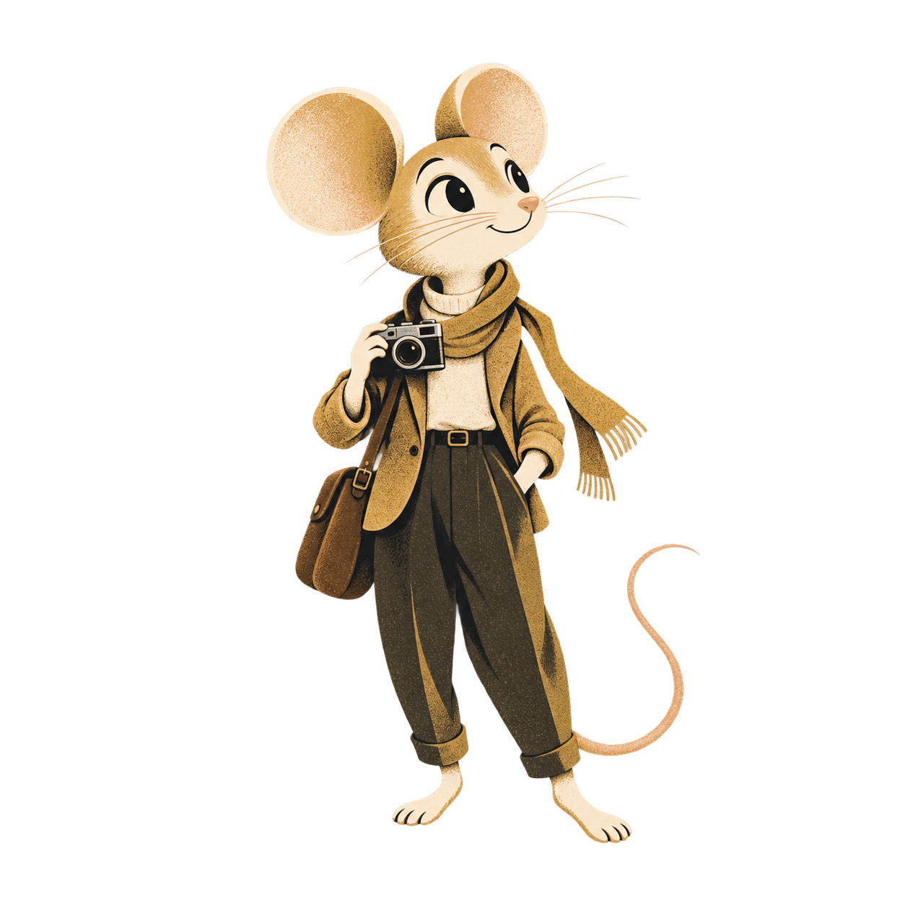

OUR PLANET, REMEMBERED
The things we kept
tell us who we are
A photograph with a name pencilled on the back. A boat built by hand. A voice describing a place that has almost disappeared. A museum keeps these things because somebody understood that they mattered.
Museum Mouse begins with that act of care. Mark brings a filmmaker’s curiosity to the photographs, objects, research and voices a museum has gathered, looking for the human thread that can carry a film. Sometimes it takes a few minutes to follow; sometimes the story needs twenty.
A village collection might hold the only surviving account of a trade, a family or a way of life. It deserves the same patience with facts and feeling as a national collection. The first films will show what that care looks like in practice.

From far away, the museums are tiny points on one small planet. Up close, they hold whole worlds.
A mouse is a good guide to a museum. Small enough to notice what everyone else walks past, curious enough to follow a thread behind the display case. Pip’s place here is beside the story, with his nose in the details.
a much larger world
The first journeys begin in museums. In time, the same curiosity could follow a ghost walk through Aspen or Stockholm, a heritage trail, or the history of a family business. Those paths can wait until the first museum films have found their feet.
THE FIRST CUSTOMERS
The people keeping
the stories alive
Often the beginning is a curator who knows an object’s history by heart, or a volunteer who has spent years sorting photographs. A regional museum or historical society can be a promising first partner when that knowledge is ready to share, someone can approve the facts, and there is an audience waiting for the story. A donor may help where the collection has more stories than money.
| Customer situation | Useful offer | Internal champion | Likely funding conversation |
|---|---|---|---|
| A collection with no concise introduction Local history, craft, industry, community memory | One subject that connects objects to people; a film visitors and teachers can actually use. | Curator, educator, director | Director or board; a local donor or heritage foundation where the museum lacks a budget. |
| An exhibition with an opening date | A launch film and social extract made from cleared exhibition material. | Exhibitions and marketing | Exhibition budget holder; procurement may set the signing process. |
| Existing film, new audience | A new language, accessible version, tighter narrative, or a genuinely useful refresh. | Education, visitor experience, digital | Content or access budget; ask about actual shortcomings before proposing replacement. |
| A donor with a story to support | A specific collection story with museum editorial control and clear sponsor recognition. | Development plus a curator | The donor funds the museum or the commission; confirm who contracts and approves. |
| A regional group of small museums | A sponsored series sharing production standards, with each institution approving its story. | Museum association or tourism partner | Regional funder, destination organization, cultural agency, or pooled budgets. |
| A major museum | A tightly scoped subject film or localization pilot that demonstrates craft and reliability. | Digital, interpretation, exhibitions | Established procurement and rights teams. Treat a flagship account as a longer sales cycle. |
Commissions and gifts
Commercial commissions pay for the work of making films. Sponsored access allows a donor to support a smaller collection, with the same editorial care and a scope its staff can manage. The first sponsored films would help establish the method without putting that development cost on museums least able to carry it.
A published sponsor policy would make the choices understandable: the museum’s documented resources, the value of the project and the audience it could reach. A country’s wealth or a low admission price tells us too little about an individual museum’s finances.
The people around the table
The first introduction may come through a museum association, a staff page or an existing relationship. The person who cares most about the story may be different from the person managing its budget or signing the contract. Understanding those roles makes the early conversation easier for everyone.
A useful contact record keeps the public work address, the person’s role, its source and the date checked. Signing authority needs confirmation, particularly where a board or public procurement process is involved.
Three places to begin
Aspen first
Wheeler / Stallard Museum and Aspen Historical Society. Mark’s existing connections offer a place to begin with trust. One story from the archive would give the museum and the producer a shared experience of finding material, checking the facts and shaping a film.
The archive includes photographs, footage, and oral histories. Permissions still need checking. Archive source ↗
A Swedish working life museum
Mark’s Swedish connections and ArbetSam offer a route to a willing partner. A workshop, mill or maritime collection could carry a story about how people made their living, told in Swedish and English.
ArbetSam describes roughly 1,500 working life museums, largely supported by volunteers. Its directory is a discovery source, not evidence that a particular museum lacks film. ArbetSam ↗
A distant, specific story
A distant pilot would begin with a local partner who wants the story told and can help with material and language. The Toba Sea Folk Museum suggests one possible subject: fishing knowledge, wooden boats and the relationship between people and sea.
Toba is a subject example, not a verified low budget prospect. Its own site describes over 90 wooden fishing boats. Museum source ↗
Vasa already has a film. Its website lists a film lasting 17 minutes in several languages. A useful conversation would begin with the audience the museum hopes to reach next. The age and limitations of the current production still need to be established. Current film information ↗
DISCOVERY & QUALIFICATION
The stories beyond
the edge of the map
A museum can be absent from this globe and still be at the heart of its community. UNESCO’s estimate and this atlas describe different inventories, assembled at different times. The globe combines Wikidata with limited OpenStreetMap enrichment; duplicate records, branches, closed sites and missing coordinates all affect the count. The difference points to more research. It cannot tell us which museums need a film or who can commission one. UNESCO source ↗
Directory scout
Read national and regional registers, association directories, municipal culture pages, tourism lists, and local language sources. Begin with Colorado and Sweden. Save the exact listing and date.
Identity checker
Match name aliases, official domain, address, coordinates, and parent institution. Separate a museum from its branches. Route uncertain matches to a person; keep provenance on every field.
Opportunity researcher
Look for exhibition dates, education needs, published films, available languages, recent grants, annual reports, and public staff roles. An inaccessible video stays “not assessed.”
Producer’s shortlist
Prepare a cited profile and a tailored email draft. A person confirms the recipient, premise, and offer before any message is sent. No outreach or background agents are running from this page.
How to build the first research agent
Use a small scheduled workflow with a queue of approved directory URLs, a source reader, an extraction model, a deduplication step, and a review table. Give the model a fixed schema and require “unknown” plus a source link when evidence is missing. A first implementation can use a script and a database or spreadsheet; it does not require a custom platform.
- Seed 50 listings from one regional source. Read public pages within the site’s permitted access and request limits.
- Extract identity, status, contact role, film evidence, and possible deadline. Preserve source text or a short evidentiary excerpt.
- Compare against the atlas by institutional ID, official website, name, address, and distance. Flag potential matches rather than silently merging them.
- Human check the first 20 profiles. Measure duplicates, wrong contacts, unsupported claims, and missed institutions.
- Only after accuracy is acceptable, expand sources and add a weekly change check. Approved outreach remains a separate step.
Agent output should be a decision aid: “This museum has a new exhibition opening on this sourced date,” followed by what remains unknown. It should not declare that a film is awful, guess its production cost, or fabricate purchasing authority.
A qualification score, with a separate evidence check
Proposed weights, not a validated sales model. Keep unknowns unresolved. A high benefit project without money goes to the sponsor queue; it does not become a low quality production. Do not score nationality, perceived prestige, or wealth inferred from location.
THE PRODUCTION SYSTEM
How a collection
becomes a film
The first good moment may come while listening to a recording or noticing a detail in a photograph. Software can help catalogue the material and lay out possibilities. Mark follows the thread, working with the museum to shape a story that is accurate, moving and worth someone’s time.
A box of beginnings
The museum supplies approved photos, scans, footage, research, and recorded voices through a project folder. A form captures the audience, intended use, deadline, languages, AI policy, rights, and factual approver. A short call is optional; new filming and interviews are separately scoped.
Finding the thread
AI transcribes and tags material, drafts a treatment, and suggests a narrative arc. Mark chooses the angle and revises the script. The curator checks facts, terminology, cultural context, and gaps before expensive production starts.
Giving the story a voice
AI proposes shots, controlled movement on approved images, temporary narration, titles, diagrams, and edit assemblies. Mark chooses the performance and images. Reconstructed scenes receive an explicit label and must not be mistaken for archival evidence. Use a licensed voice or a consented clone.
The rhythm of the film
Assemble in Premiere or a comparable editor. Shape pacing, transitions, graphics, sound design, and a licensed or approved generated score. Keep the clean master editable. Translation follows the locked meaning, not an independently improvised script.
A conversation around the cut
Round one approves script and storyboard. Round two reviews the cut. One museum contact consolidates comments. Corrections to our factual or technical mistakes remain our responsibility; new scope and preference changes after approval receive a written quote.
Before the audience arrives
Check every factual claim, visual reconstruction, pronunciation, caption cue, language version, music permission, export, and playback destination. Obtain the curator’s recorded approval and the producer’s final sign off. Keep the rights register and version history with the project.
The work behind the scenes
Transcription, asset tags, evidence retrieval, treatment options, script drafts, rough assemblies, shot variants, temporary voices, translation drafts, subtitle timing, aspect ratio versions, and technical checks.
The people responsible for the film
Story, factual interpretation, cultural authority, visual truth, narration, permissions, language quality, accessibility, the museum’s sign off, and the final cut. Automation may make these decisions faster; it cannot make responsibility disappear.
The first glimpse of the film. A concept lasting 90 to 120 seconds gives the museum something tangible to respond to before a complete story is made. Paid or sponsored pilots would record the real time spent on research, production and review. Up to three agreed demonstrations could be offered without a fee, with permission to show the results. Any faster production target would have to be supported by those records.
A PROPOSED COMMERCIAL OFFER
A film within
the museum’s reach
Prices below are proposed tests in USD, before tax, travel, new filming, unusual archive charges, or specialist access services. Duration, asset readiness, visual complexity, and approvals determine the quote.
$3,500
A narrow, asset ready story; one primary language and one reviewed translation. Exhibit and web masters, captions, transcript, and one social extract adapted to the agreed formats.
- Two consolidated review rounds
- Simple graphics and limited generated motion
- No new interviews or location shoot
$5,000
A more developed subject film with two reviewed language versions, richer sound and motion, the same release materials, and a clearer production allowance.
- Modelled below as five minutes, not a duration rule
- Exhibit, web, and one social story
- Budget production hours before accepting
$10 to 15k
A broader narrative, three reviewed languages, a gallery loop, and three distinct social extracts. More complex or long form films need a separate treatment and cost estimate.
- Agreed motion and graphics allowance
- Distribution specific versions
- Specialist services quoted explicitly
The care a new language needs
Every standard package starts multilingual. Additional languages: test $350 to $700 per five finished minutes per language for translation, native review, pronunciation, caption timing, and final checks. Specialized, low resource, signed, or audio described versions may need a different quote. A hundred automatic renders are not a hundred approved releases.
A film that can grow with the collection
Test an annual $750 to $1,500 refresh for an existing short film: a defined set of changes, existing approved assets, and two consolidated rounds. Scope it first; a new narrative or substantial footage is a new commission. Do not offer unlimited updates.
What belongs in the commission
Record the script, runtime range, deliverable count, language list, assets, reviewer, deadlines, and acceptance criteria in the estimate. Quote additional change rounds at $300 per two hour block, approved before work. These are business hypotheses to adjust after the pilot log.
Paying for the work
Propose 50% on booking, 25% on approved script, and 25% on release. Public institutions may require other procurement terms. Use the $75/hour figure as an internal production cost assumption; a fixed client price must also pay for sales, management, software, access review, and risk.
THE NUMBERS, MADE ADJUSTABLE
The time and people
behind each film
A finished film hides much of the work that made it: the afternoon spent finding a source, the revised narration, the translation someone listened to twice. This calculator gives that work room in the budget. Its starting example allows five minutes, 24 producer hours, two languages and repeated attempts at generated shots. The figures are assumptions to explore while the first films establish the real cost.
| Included cost | Per film | Monthly | How it is modelled |
|---|
The assumptions inside these numbers
- Capacity: 20 working days per month, 120 direct production hours per full time producer. Staffing rounds up; specialists and sales are additional. Changing film duration does not automatically change your entered producer hours.
- Generation: runtime × generated share × attempts × provider rate. The default produces 1,440 generated seconds to obtain 180 usable seconds. This is a planning ratio, not a measured acceptance rate.
- Other media: 80 generated images per five minute film at $0.08 each, plus a $10 script/research model allowance per five minute film. Recheck model pricing, failed job billing, resolution surcharges, and rate limits before production.
- Voice: 900 characters per finished minute, three narration attempts, and every language. The model chooses an ElevenLabs plan with enough listed credits; automatic dubbing, transcription, and music use different credit rates and need separate allowance. Above Business capacity it shows a planning extrapolation requiring an enterprise quote.
- People and rights: $150 per additional language per five minutes for native review; $150 per five minutes for access/technical review; $100 per film for routine music/rights allowance. These are estimates, not supplier quotes. Sign language production, complex audio description, travel, new shooting, and expensive archive licenses are excluded.
- Recurring tools: Adobe Pro at $69.99 per producer seat per month, a $200 monthly operations allowance, plus voice. Asset storage uses 100 GB per five minute project at $0.015/GB month for the new monthly cohort only; retained archives accumulate.
- Reserve and funding: add 10% production contingency. Funding = three times the monthly budget plus $6,000 per rounded up producer workstation. Reuse existing hardware where possible. Full hiring costs, non production payroll, sales, insurance, taxes, and product engineering require another budget.
All prices are USD, before taxes. The producer hour estimate matters far more than the script token bill. Inputs are local calculations; changing them does not buy services or order equipment.
What Mark can do alone
At 25 production hours a month, a 24 hour film means roughly one film a month; three films require an approximately eight hour production process. At 120 production hours a month, those same assumptions yield five or fifteen films. Working on several films in a day is a work in progress measure, not a delivery rate.
Five films every five working days means twenty a month: four producers at 24 hours per film, or two at eight hours. Fifty every five days means two hundred a month: forty producers at 24 hours, or fourteen at eight hours. These counts exclude sales, coordination, and specialist reviewers.
A three to five day turnaround is a target after cleared assets and an approved script are ready. Curator availability, translation, rights, and rework can extend elapsed time. Promise the delivery date only after reviewing the actual job.
TOOLS, TOKENS & EQUIPMENT
Inside the
filmmaker’s workshop
The workshop brings together familiar editing tools and newer ways of preparing pictures, words and sound. Each has its own meter: tokens for text, images or credits for stills, generated seconds for video, and characters or credits for narration. A spending limit for each project helps the producer keep attention on the film.
| Production job | Proposed primary stack | Verified rate or budget basis | Use and limits |
|---|---|---|---|
| Research, treatments, scripts, agent extraction | Claude API plus museum provided evidence | Sonnet 5: $2 / million input and $10 / million output tokens. 1M input + 100k output = $3, excluding search/tool fees. Source ↗ | The calculator allows $10 per five minute film. Use source linked drafts, not unsupported historical invention. |
| Photoreal images and storyboards | Runway Gen 4 Image; Adobe Firefly / Photoshop for design | Runway: $0.05 at 720p or $0.08 at 1080p per Gen 4 image. API rates ↗ | Approve a still before paying to animate it. A generated historical scene is a reconstruction. |
| Image to motion and video generation | Runway Gen 4.5, with Turbo for exploration; Veo for selected shots | At $0.01/credit: Gen 4 Turbo $0.05/s, Gen 4.5 $0.12/s, Veo 3.1 with audio $0.40/s. API rates ↗ | These are generated seconds, including variants. ProRes/HDR options can add surcharges. Concurrency and spend limits require approval at scale. |
| Narration and sound tools | ElevenLabs; human talent where the subject needs it | Pro $99 / 600k credits; Scale $299 / 1.8M; Business $990 / 6M, monthly listed plans. TTS commonly uses one credit per character. Pricing ↗ | Plan capacity is shared by service usage. A commercial plan does not replace speaker consent or native review. Do not treat automatic dubbing minutes as equivalent to narration characters. |
| Editing, titles, motion graphics, mix, review | Premiere, After Effects, Photoshop, Audition, Frame.io | Adobe Creative Cloud Pro: regular US $69.99/month on an annual contract billed monthly. Team terms differ. Adobe ↗ | Use templates and editable timelines. Frame.io supports the review flow; confirm included storage and seats before scaling. |
| Alternative generation and experiments | Higgsfield and model alternatives | Obtain model specific API and enterprise quotes. Consumer subscriptions and API balances are separate. API information ↗ | Keep this optional until a controlled shot comparison proves value. Do not subscribe to every tool merely to hold unused allowances. |
| Music | Project cleared stock or commissioned music; approved generation where appropriate | $100 per film is a placeholder allowance, not a universal license price. | Check gallery exhibition, web, paid social, territory, term, client transfer, and content ID handling. An API can deliver a license record; it cannot grant rights absent from the contract. |
| Storage and public playback | Managed object storage plus a managed video service | R2 standard storage $0.015/GB month plus operations; Stream $5/month per 1,000 stored minutes and $1/1,000 delivered minutes. R2 ↗ · Stream ↗ | Keep source masters separate from streaming copies. Audience playback is not included in the production calculator. |
A place to edit, listen and look closely
Start with an existing capable edit system if available. For new purchasing, plan for a modern Mac Studio class or comparable PC workstation, approximately 64 GB RAM, 1 to 2 TB internal SSD, a 4 TB fast working drive, two independent backups, a reliable calibrated display, monitoring headphones, and wired broadband.
Use $5,000 to $8,000 per equipped seat as a planning allowance, not a quoted configuration. Benchmark a real project before upgrading. Cloud generation removes the need to buy local inference GPUs for this proposed workflow. Apple’s current store offers configurations in this class; price at order time. Current options ↗
When more hands are needed
For the default twenty film month, budget four production equivalents plus shared coordination and language/access reviewers. At two hundred, the model requires forty production equivalents; add dedicated production management, QC, sales, support, and rights operations.
The method needs a style bible, source linked scripts, approved shot examples, test assignments, and regular review led by Mark. Measure first pass acceptance and rework before lowering producer hours. Equipment purchases can follow confirmed work as the team grows.
The size of the longer ambition
If 104,000 institutions each ordered once over five years, that would be 20,800 films a year, about 87 per working day across 240 days. At 24 hours per film and 1,440 production hours per producer year, it would require about 347 production equivalents, plus support. This is a capacity illustration, not demand.
Those numbers describe the scale of an ambition, while actual demand begins with individual museums and their decisions. Research can introduce a collection to the producer; a conversation still has to establish the audience, the project and its funding.
At 100 GB of retained project material per film, 1,000 films add 100 TB; at $0.015/GB month that is about $1,500 monthly in standard object storage before request charges and backups. Set retention terms. Keep a second independent copy and test restores.
A STANDARD RELEASE PACKAGE
A place in the story
for every visitor
A child watching in a classroom, a visitor reading captions in a noisy gallery and someone listening at home may meet the same story in different ways. Delivery begins with those people. The proposed formats below need to be checked against the museum’s equipment and the places where its film will appear.
| Destination | Proposed delivery | Checks |
|---|---|---|
| Exhibition master | Clean master in a high quality editing codec, plus the gallery player’s required playback file. Target 3840 × 2160 where the source and production support it; otherwise honest native HD. | Frame rate, color, sound, loop behavior, playback hardware, and exact caption placement. Upscaling is not new captured detail. |
| Website / YouTube | 16:9, H.264 MP4 with AAC audio; clean and captioned versions; separate SRT and WebVTT, transcript, poster, and description. | Captions switch correctly, no unexpected crop, accurate language labels, keyboard playback. YouTube encoding guidance ↗ |
| TikTok / Instagram Reels / YouTube Shorts | 9:16, 1080 × 1920 house preset; manually reframed extract with burned in captions and a clean version. | Safe zones for current interface overlays; legible titles; music rights for the actual account and usage. Verify duration limits at publication. |
| Instagram / Facebook feeds | 4:5, 1080 × 1350; 1:1 or 16:9 when the placement calls for it. | Keep faces, objects, titles, and captions clear after cropping. Adapt the edit rather than stretching the image. |
| Reddit / donor email / classroom | Placement appropriate MP4 or a linked accessible player; a captioned extract for feeds, thumbnail link for email, and transcript or lesson prompt for schools. | Community rules, attachment limits, embedding support, age suitability, and rights. Do not assume email clients can play an embedded movie. |
Caption design is part of the film
Supply a clean master, a burned in version, and SRT/WebVTT files. Default to clear white text on a sufficiently opaque dark panel; offer yellow or museum brand colors only where contrast stays strong. Use a consistent type size, sensible line breaks, speaker identification, and meaningful sound cues. Keep captions away from titles and app controls.
SRT carries text and timing, not reliable universal styling. Burned in captions preserve appearance; optional caption tracks preserve user control. Validate reading speed, timing, spelling, names, and local writing systems with a reviewer.
Access goes beyond captions
For Deaf and hard of hearing audiences, include accurate captions and meaningful sound descriptions. For blind and low vision audiences, plan audio description when visual information is not conveyed in narration. A structured descriptive transcript helps screen reader and refreshable Braille users, including some deafblind people.
Offer plain language summaries, clear pacing, chapters, and optional easy read versions for people with cognitive or learning disabilities. Sign language interpretation uses a qualified practitioner and the relevant local sign language. User testing and specialist services need their own scope. W3C media guidance ↗
The full current voice language list
ElevenLabs’ support page lists 74 languages for Eleven v3. This is vendor voice generation coverage, not a guarantee of approved Museum Mouse translations, accents, pronunciation, or cultural suitability. We release a language only after its reviewer signs off. Current language source ↗
Regional accents are selected by voice audition and reviewer feedback, not by stereotyping a nationality. Translation, narration, captions, and dubbing have different model capabilities. For an unsupported or insufficiently reliable language, commission a human translator and narrator. Two reviewed languages are a better launch promise than a hundred unchecked versions.
The journey from editing room to audience
For the pilot, use a dedicated project folder and a review service such as Frame.io. At scale, build a Museum Mouse project portal on managed storage, with project permissions, expiring upload links, version history, and a rights manifest. Use managed transcoding and streaming; do not build a proprietary Dropbox or buy a public video server first.
Keep the preservation master and project files separate from the streaming rendition. As an example, 100 five minute films consume 500 stored minutes and fit within a $5/month Stream storage increment; 10,000 complete five minute views consume 50,000 delivered minutes, about $50, excluding preloading and other usage. R2 is for project assets, not a substitute for adaptive video playback. Playback pricing ↗
A film behind the pin: attach an approved film record to a museum ID: title, synopsis, poster, runtime, language tracks, captions, transcript, access features, rights, and hosting ID. A “Has a film” filter and a deliberate Play action follow. The next step needs the first approved film and its hosting link; playback is not connected yet.
THE RESEARCH NOTEBOOK
The record behind
the story
Every pin begins as a record, and many records still have blank spaces. This atlas contains 68,730 entries, including 22,189 website fields, 53 email fields, 134 phone fields and only one sourced operating budget. It offers places to begin asking questions. Most film inventories and budgets still need research, along with many classifications and location details.
| Profile dimension | Store these data points | What they tell us |
|---|---|---|
| Identity & geography | Institution and branch ID; local and translated names; official domain; country/territory; administering area; locality; address; coordinates; coordinate precision; source; checked date. | Whether this is a distinct place, where it operates, and whether a record is a duplicate. City/town/rural status needs a source. |
| Subject & governance | Art; history; culture; memory; science/nature; science/technology; plus maritime, craft, industrial, medical, music, sport, migration, community, Indigenous, house museum, open air, and digital collections. Record governance separately. | Story possibilities and who has authority. Permit multiple subject tags; “unclassified” remains valid until checked. |
| Operating scale | Annual operating expenses; original currency; fiscal year; report URL and page; institutional scope; confidence; status; conversion source and date. | Research bands: under US$1m equivalent; US$1m to under $10m; $10m+. These are our proposed conventions, not a global museum standard. |
| Commissioning capacity | Under $5k; $5k to $15k inclusive; above $15k; or unknown. Add proposed project, confirmed amount, committed/pending funding, payer, signer, and procurement steps. | A separate purchasing conversation. A large annual budget does not establish a film budget. |
| Existing media | Film URL, title, subject, runtime, publication and confirmed production date, languages, captions, description, rights, purpose, deployment, and last update. | A demonstrable gap or reuse opportunity. The upload date alone does not date the production. Never infer production cost from appearance. |
| Readiness & permissions | Asset inventory, digitization quality, copyright/licensing, voice consent, cultural authority, approved AI providers, retention restrictions, factual approver, and review capacity. | Whether the proposed workflow is allowed and practical before spending on production. |
| Institutional history | Comparable annual expense, attendance, staff, exhibition, and collection figures; year, definitions, mergers, closures, reopenings, and reporting scope. | A trend supported by comparable records, not a guessed twenty year growth story. |
Where financial evidence comes from
Use audited reports, charity filings, government accounts, procurement awards, and museum confirmation. For eligible US nonprofits, IRS TEOS supplies 990 series filings; inspect whether the return represents one museum or a parent organization. Government museums and small organizations may report differently. IRS source ↗
Preserve SEK, USD, JPY, or other original currency and fiscal year. Use a sourced exchange rate only for a labelled comparison. Do not substitute admission price, GDP, national income, or a museum’s fame for actual expenses.
What a history agent can establish
Extract figures from annual reports, keep page references, normalize category definitions, and flag changes in institutional boundaries. Compute nominal growth only on comparable figures; adjust for inflation when discussing real growth.
For a positive baseline and end value, annualized growth is (end ÷ start)1 / years − 1. A reorganization, new branch, currency change, or missing year can break comparability. Review the evidence before attaching a growth claim to a museum.
Research film availability before making a worldwide claim
Discovery study: begin with 60 institutions across the US, Sweden, and Japan: ten small and ten mid sized in each, where size can be sourced. Keep unknown size records separate. Add a small flagship comparison group. This is qualitative market research, not a representative global estimate.
Define “suitable film” before auditing: relevant subject, currently usable rights, intended audience, accessible language/caption options, and an actual deployment. Check official sites, channels, partner apps, and museum confirmation. Record “not found publicly,” “unavailable to inspect,” and “confirmed absent” as distinct states. Double code a subset to check agreement.
A prevalence study: under ideal simple random sampling, around 385 completed observations estimate a proportion near 50% to roughly ±5 percentage points at 95% confidence. That assumes a suitable sampling frame and response process. The current incomplete atlas is not such a frame. Country/size strata, nonresponse, weighting, and clustering require a statistician’s design and may increase the sample.
Twenty institutions in sixty countries is 1,200 observations, but geographic spread alone does not make the sample representative. Until then, report findings only for the audited sample and publish the method.
The rights package travels with the film
Input permission
Owning an object or a scan does not necessarily confer copyright, performance, privacy, music, or AI processing rights. Identify the rights holder, permitted uses, territory, term, and any community restrictions.
Provider permission
Record tool, model, account tier, processing location, retention/training terms, and the terms version in force. Approve confidential uploads before sending them to a service.
Output and transfer
The museum keeps its supplied material. Assign the human authored film work as agreed and license third party components explicitly. Do not promise exclusive copyright in every generated frame.
Release record
Keep asset IDs, license receipts, voice releases, music cues, reconstruction labels, caption and language approvals, producer sign off, and the museum’s final acceptance.
Runway permits commercial use under its published policy. Higgsfield’s current consumer terms allow commercial outputs but also describe training uses; enterprise terms can differ. Neither statement clears underlying museum material. US Copyright Office guidance distinguishes human authorship from purely generated output; other jurisdictions differ. Have counsel translate the intended ownership and AI processing terms into the client contract. Runway ↗ · Higgsfield ↗ · US Copyright Office ↗
Who writes the museum’s AI policy? There is no universal role. Ask the director or digital lead to identify the owner; legal, IT, collections, curatorial, and community representatives may all be involved. Record the policy version, approved use, data restrictions, and the person authorized to make an exception. That conversation belongs at the beginning of the commission.
THE COMPETITIVE LANDSCAPE
The other storytellers
in the museum world
| Organization | Published offering | Overlap with Museum Mouse | Position to test |
|---|---|---|---|
| Bloomberg Connects ↗ | Free cultural guides with audio, video, photos, and text; partner onboarding, technology, and marketing support. | Distribution and access to museum content. The platform already brings museum stories to audiences. | Potential destination for commissioned films. Do not pitch a replacement app as the differentiator. |
| Smartify ↗ | Visitor platform plus content production, including video, audio, immersive storytelling, languages, and accessibility. | Direct overlap in production and interpretation, alongside AI enabled platform features. | Compare a focused film service, transparent scope and a sponsor route for smaller museums against the production services already available. |
| Cuseum ↗ | Museum digital engagement tools, including AI text to speech in its content system. | Automated interpretation, narration and audio distribution for museum visitors. | Potential channel or adjacent competitor; verify present video production scope before proposing a partnership. |
| Cortina Productions ↗ | Museum films, historical recreation, CGI, archival storytelling, interactive and immersive experiences. | Strong direct overlap in high quality institutional storytelling. | Compete on a validated smaller scope and repeatable economics; do not claim equal outcomes without comparative work. |
| Northern Light Productions ↗ | Documentaries, museum media, animation, installations, and digital experiences. | Producer led story and museum production. | Potential senior production benchmark or collaborator. Public information does not establish identical pricing or workflow. |
| Local filmmakers, internal museum teams, and AI studios | Highly variable production, existing relationships, and growing access to the same tools. | The museum may already have a trusted route to a good film. | Win with demonstrable quality, reduced staff burden, clear rights, multilingual delivery, and dependable updates. |
Museum Mouse’s place among them: a filmmaker working from a museum’s own collection, with a clear scope, reviewed language versions and a sponsor route for smaller institutions. The first completed work and comparable quotes would establish where this approach offers something useful. The research so far does not establish a unique service or a proven price advantage.
LETTERS & CONVERSATIONS
The conversation
that starts a film
A useful first letter begins with something the museum cares about: an object, an exhibition, a question its visitors often ask. These drafts leave room for that detail. They are working notes for future conversations and have not been sent.
A first letter to the museum
Subject: A film from the stories already in [Museum]’s collection
Hello [Name],
I’m Mark Johnston, a documentary producer developing Museum Mouse: a service that turns a museum’s existing photographs, footage, research, objects, and voices into a film worth watching.
I came across [one specific collection or exhibition, with a verified detail]. It suggests a story about [one audience question]. I’d be interested to learn whether a film would be useful to you, and what you already have.
For a small pilot group, we’re testing a producer led process with museum fact checking, multilingual versions, captions, and clear rights documentation. We agree on the story, scope, review rounds, and any fee before production. Where a good project lacks funding, we can explore a sponsor rather than assume the museum has a budget.
Would you be open to a twenty minute conversation, or point me to the person responsible for interpretation or film commissioning? It would help to see your most recent film and hear which story visitors still leave without understanding.
Best,
Mark Johnston
Museum Mouse
[Work contact / relevant film link]
The discovery conversation
- What should a visitor understand or feel after this film?
- Which existing film serves that purpose now? May we watch it?
- What did the previous film cost, and how many staff hours did it require?
- What prevented its last update: rights, time, budget, review, or technology?
- What assets are ready, and who can authorize their use and AI processing?
- Which languages and access formats are supported by audience evidence?
Before the scope is accepted
- Who approves facts, who consolidates feedback, and who signs?
- Which AI policy applies, and who owns it?
- What actual commissioning range and funding decision date apply?
- Is there a donor or regional funder suited to this specific story?
- Where will it play, and what technical requirements matter?
- Would the museum accept the proposed price, deliverables, and two review rounds?
Your collection already holds the story.
Museum Mouse brings documentary production to the photographs, objects, research, footage, and voices already in your care. We begin with one clear audience need and shape a film around it. The length follows the story, whether that is a short introduction or a fuller narrative.
The museum retains authority over facts, context, and appropriate use. A producer develops the narrative, directs the visual and sound choices, and takes responsibility for the finished work. AI assists transcription, options, motion, and versioning; it does not become an unsupervised historian. Reconstructed imagery is identified, and assets enter approved tools only when the permissions support that use.
The proposed package includes multilingual releases, accurate captions and transcripts, an exhibition master, a web version, a social extract, and a documented rights record. Scope and two consolidated review rounds are agreed before production. We are testing a $3,500 to $5,000 starting range for focused, asset ready films; a larger or more complex story is priced separately.
A first conversation would explore a story the museum wants to tell, the material it holds and the person who can help us understand it. Together we could decide whether a paid or sponsored pilot is appropriate. We will measure production time, museum staff time, factual corrections, and audience usefulness rather than promise effortless production.
Over five years, the ambition is a maintained library of museum approved stories that can be adapted as exhibitions and audiences change. That library would grow from the first film and the audience it serves, as museums find new uses for work they are proud to share.
The ask: one discovery conversation, a small sample of cleared material, and the person who can approve the facts and the commission.
A place for the smaller collections
The smallest museum can hold evidence of a craft, community, or way of life that deserves a remarkable film. Its obstacle may be money, staff time, digitization, or simply access to a producer. Museum Mouse is a proposal to make that production more attainable while keeping museum judgement at the center.
A philanthropic fund would underwrite specific films chosen with the institutions, not impose a donor’s historical interpretation. Each project would use approved assets, a museum factual reviewer, a documentary producer, and language and access specialists where needed. AI can reduce repeated preparation and versioning; the quality and rights checks remain explicit.
The commercial service and the sponsored program should be reported separately. Paying museums support a sustainable production operation. Sponsored commissions reach collections that cannot support the full fee. The standard of care is shared; scope is agreed honestly. We would publish measures such as approved films released, language versions actually reviewed, museum staff burden, usable school resources, audience response, and production cost.
A practical first commitment is a capped pilot fund rather than a global promise. A $15,000 to $25,000 planning envelope can support three tightly scoped pilots, initial tools, specialist review, and some setup, depending on existing equipment and rights costs. The actual budget follows asset intake. The budget would be agreed after confirming the museums, their material and the scope of each film.
Over five years, the ambition is a network of trained producers and local reviewers serving underrepresented collections alongside larger institutions. Funding would expand only after the first films demonstrate quality, a repeatable cost, and a real benefit to their museums.
The ask: underwrite three accountable pilot stories, with a capped budget, museum editorial independence, and a decision to continue based on the production log and completed work.
An invitation to another filmmaker
Museum Mouse starts with a familiar documentary task: turn an archive and a body of knowledge into a film that has an idea, a point of view, and an audience. The proposed change is in preparation and versioning. Software transcribes the material, links evidence to a draft script, proposes shots, and creates controlled visual or narration options.
The producer still chooses the narrative and judges the image. A curator verifies the factual claims and cultural context. Generated reconstructions are labelled; they are never passed off as a record of an event. Voice, music, archive, and tool permissions are documented. Translations and access versions require competent review.
We would build an editable timeline from approved assets and selected generated material, then lock the meaning before making language and platform versions. The method should bring a producer a small number of well supported choices rather than hundreds of unusable outputs. The pilot would show how well those choices support the filmmaker.
We are modelling a five minute example at 24 direct producer hours, with generous generation retries and two languages. An eight hour process is a stretch case, not an established result. At 120 production hours per month, one producer could support five films at the first assumption or fifteen at the second, before specialist and sales work. Actual time and first pass acceptance determine whether the economics hold.
In five years, the opportunity is a shared production system built around consistent research, release standards and experienced people who care about the work. Mark would establish the examples and review method, then train collaborators through paid test projects. If the films or the time logs are not convincing, we revise the process before scaling it.
The ask: make and critique one pilot together, log the real work, and help define what another experienced producer would need to repeat it.
THE FIRST CHAPTER
The first films
and what comes after
A conversation in Aspen
Talk to Aspen first, select one story, inspect assets, confirm rights and AI policy, find the signer, and agree on scope. Establish the time/cost log and a sample release checklist.
The first screening
Approve the treatment, build a concept, finish the film and its second language, and test it in its actual destination. Measure staff effort, retries, specialist cost, and response.
Sweden and a distant collection
Complete the Swedish and sponsored distance pilots. Train one additional producer on the same method. Compare their cost, corrections, and approval burden.
A service taking shape
Publish a scope and price that cover costs. Add research automation, a client portal, and film playback in order of demonstrated need. Hire against paid demand.
A possible path through the next five years
| Year | Completed films | Revenue at $5,000 each | Production equivalents at 24h / film | Condition for moving forward |
|---|---|---|---|---|
| 1 | 24 | $120,000 | 1 | Three strong pilots, repeat paid buyers, measured production costs. |
| 2 | 120 | $600,000 | 2 | A second producer matches quality; a repeatable route to buyers. |
| 3 | 300 | $1.5m | 5 | Regional partners, dependable review, and repeatable localization. |
| 4 | 600 | $3m | 10 | Reliable operations and renewal demand; no fall in factual or visual quality. |
| 5 | 1,200 | $6m | 20 | Sustainable acquisition cost, producer training, sponsor reporting, and maintained archives. |
Production equivalents round up from 1,440 direct production hours per producer year. Revenue is gross, assumes every film realizes the stated fee, and excludes refunds and discounts. Sponsored films still require a payer. These volumes are hypothetical milestones, not observed demand or profit estimates.
PIP’S CLOSER LOOK
There is always
something closer to see
Pip would probably begin with the smallest thing in the room: a maker’s mark, a handwritten date, a face at the edge of a photograph. That is a useful habit for a filmmaker. Aspen offers a place to begin with people Mark knows; Sweden brings another language and a connection to home. A third collection, farther away, can open another window onto the same planet.
Return to the globe ↑From the mouse sketchbook
Two old drawings still have a place in the margins. Pip remains our guide; these are ideas for small supporting appearances as the films arrive.
A possible premiere marker
The mouse pin
Little ears on a gold pin could mark a museum whose film is ready to watch. The atlas keeps its round gold pins for now, leaving this as a possible sign of a new arrival.
A companion for the credits
The Archivist
Film reels for ears, a magnifying glass for an eye: a curious assortment of parts that somehow becomes a mouse. A brief turn of those reels could introduce a film or appear beside its research notes.
Sketches carried forward from the earlier Museum Mouse website ↗.